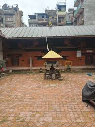
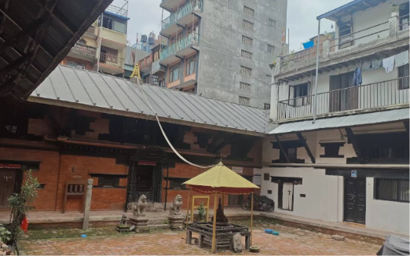

The courtyard
A shared space for ritual, encounter and community.
A place of worship.
A place of belonging.
Away from the movement of the street, the bahal opens into a quieter world of brick courtyards, carved timber, Buddhist devotion and generations of community life.
Read the story ↘
MUSYA BAHAL
A study of place, memory and tradition

A bahal is a traditional Buddhist courtyard complex woven into the urban fabric of the Kathmandu Valley.
Its entrance leads into a shared space shaped by architecture, worship and community. Shrines, brick paving, timber galleries and domestic doorways can exist within the same enclosure.
Newar Buddhist traditions have developed through centuries of religious practice and social change. Many bahals continue to be cared for by hereditary communities whose responsibilities connect ritual, family and place.
To understand a courtyard, look not only at its oldest features, but also at the people who keep its traditions alive.
A shared space for ritual, encounter and community.
A sacred focus within the architectural ensemble.
The people who sustain the place across generations.

THE COURTYARD — MUSYA BAHAL
READING THE PAST
The history of Newar Buddhist institutions is preserved through inscriptions, chronicles, religious lineages, architecture and oral tradition.
Each source offers a different way to understand the relationship between faith, patronage and community life in the Valley.
Local traditions are valuable historical sources. Their details should be read alongside inscriptions and other documented evidence.
Buddhist viharas have long formed part of the religious landscape of the Kathmandu Valley. Their organisation reflects local forms of worship, patronage and community life.
Donors, religious specialists and skilled artisans contributed to the Valley's rich traditions of carved wood, metal sculpture, brickwork and shrine decoration.
Heritage is not simply a record of the past. It also exists in the daily acts of worship, care, teaching and observance through which communities maintain their sacred spaces.
LOOK CLOSER
Traditional craftsmanship is both practical and expressive. Structure, ornament and religious symbolism meet in the details of a Newar courtyard.
Positioned above many shrine entrances, the torana frames a sacred threshold. Its carved figures and motifs can identify deities, express protection and communicate religious meaning.
Look for: symmetry, layered carving and the relationship between the arch and the shrine.
Traditional Newar timberwork is recognised for its intricate lattice patterns, layered frames and carefully worked details. These elements contribute to the appearance and function of historic buildings.
Look for: repeating patterns, joinery and variations in the carving.
A chaitya is a Buddhist sacred monument or shrine, often associated with the stupa form. Its meaning is grounded in Buddhist devotion, remembrance and the presence of the Buddha's teaching.
Look for: its position in the courtyard and the ways people approach or circumambulate it.
A SHARED SACRED LANDSCAPE
Buddhist imagery and wider devotional traditions contribute to the religious landscape of the Valley. The precise identity of a shrine must be established from the site itself.
One of the Five Wisdom Buddhas in Vajrayana Buddhism, Akshobhya is associated with mirror-like wisdom and unshakable awareness. He is commonly represented with the earth-touching gesture.
A wrathful protector figure in Vajrayana traditions. Mahakala is associated with the protection of Buddhist teachings and the removal of obstacles to spiritual practice.
A widely revered Hindu deity associated with auspicious beginnings and overcoming obstacles. His worship is also part of the broader devotional landscape of Nepal.
These descriptions provide general context and do not establish that every figure is present at Musya Bahal. Site-specific identifications require verification.
ENTER WITH RESPECT
A historic bahal can also be an active place of worship and a residential courtyard. Observe thoughtfully and allow local customs to guide you.
Circumambulate shrines clockwise where this is the established local practice. Avoid entering restricted spaces.
Avoid pointing your feet towards sacred images while sitting. Follow the practices of worshippers and caretakers.
Rituals, shrine interiors and residents deserve privacy. Seek permission and respect any photography restrictions.
Keep noise low, avoid touching ritual objects and do not obstruct entrances or daily activities.
A place survives not only through its buildings,
but through the care people give it.